Discord Free-Tier users, DMs, Group DMs, and Server Level 1 Boosts.
50MB
Server Lvl 2 & Basic Nitro
Optimized for Discord Server Level 2 Boosts and Basic Nitro users.
100MB
Server Lvl 3 Boosts
Maximized for Discord Server Level 3 Boost upload limits.
1024MB
$10 Nitro Users
Designed for the 1 GB (1024 MB) upload limit of $10 Discord Nitro subscribers.
Drag & Drop Demonstration
The Execution Pipeline
1. Input
Drag & drop a video onto the preset executable.
2. Probe
ffprobe extracts duration, resolution, and fps.
3. Smart Split
Divides video based on 50% bit density mark to balance thread load.
4. Dual Encode
Two concurrent FFmpeg instances process chunks in parallel.
5. Stitch
Concatenates encoded chunks with +faststart for instant progressive streaming.
Reference measurements · NVIDIA GPU · 1080p60 to under 100 MB
Pipeline Dataflow Architecture
How compressed packets and raw frames move between storage, system memory, the PCIe bus and the GPU, and why keeping every frame on the GPU matters once the video has to be downscaled.
1 · At a glance
What changes when frames stay on the GPU
PCIe traffic when downscaling
64.4 GB → 0.55 GB
99.1% less data crossing the bus
Host CPU load
~30–40% → < 5%
Scaling moves from CPU cores to the GPU
Where frames live
Never leave VRAM
Decode, scale and encode all run on the GPU
Test clip used for every number on this pageReference baseline
Source
1920×1080 @ 60 fps
H.264 High, progressive
Duration
236.95 s
14,217 frames (03:56.95)
Input size
457.00 MB
16,178 kbps compressed
Target size
< 100.00 MB
3,446 kbps · 78.6% smaller
How the PCIe numbers are calculated
One raw frame in NV12 / YUV420p takes width × height × 1.5 bytes.
Native 1080p: frames never leave VRAM. Only the compressed bitstream crosses PCIe: 457 MB in + 88 MB out ≈ 545 MB.
Downscaled to 720p (legacy hybrid): FFmpeg downloads every decoded 1080p frame to system RAM for CPU Lanczos scaling (44.22 GB device → host), then uploads the 720p frames back to NVENC (19.65 GB host → device). With the bitstream that is ≈ 64.41 GB of PCIe traffic.
2 · Mode explorer
Pick a pipeline, see which hardware does the work
Each mode highlights the hardware it uses and shows how much data crosses the PCIe bus for the test clip.
Zero-copy VRAM execution with zero software scaling copies.
Frames are demuxed from storage and streamed as compressed NAL packets across PCIe into GPU VRAM. NVDEC decodes into CUDA surfaces, the frame scaling filter is completely bypassed (zero software pixel copies), and NVENC encodes directly on-chip. Only compressed bitstream traverses PCIe.
Why it matters:
When the BPP calculator decides to downscale (for example 1080p to 720p), running the scaler on the CPU forces a ~64 GB PCIe roundtrip. The zero-copy pipeline resizes frames in video memory with each vendor's native scaler instead:
scale_cuda on NVIDIA, scale_vaapi on VA-API, vpp_amf on AMD, vpp_qsv on Intel and scale_vt on macOS.
The NVIDIA case measured here gets back to native 545 MB PCIe traffic without losing quality. If an input cannot be decoded in hardware, the pipeline falls back to an upload tier, then to the legacy path.
3 · Pipeline diagrams
How the pipeline evolved: three physical paths
With native 1080p, frames stay in VRAM. Once the video is downscaled, where the scaler runs decides how much raw video crosses the PCIe bus. Pick a path, or compare the legacy and current ones side by side.
Path 1 · v1.1.6-pre intermediate build
CPU software decode bottleneck
-hwaccel cuda was omitted, so every frame was decoded on the CPU while the GPU decoder sat idle and NVENC waited for frames.
CPU 91% · NVDEC idle

System RAM & CPUPegged at 91%
CPU software decode (avcodec)14,217 frames decoded on CPUHeavy thread contention across cores
CPU Lanczos scalingscale=-2:720 on the host CPUCompounds the CPU work queue
CPU throttling: severe frame drops, 42.1 s encode time
PCIe 4.0 x16 busOne direction
H2D upload19.65 GB
Host RAM → NVENC (scaled 720p60)
D2H outbound88.50 MB
NVENC → disk (compressed bitstream)
Total PCIe volume: 19.74 GB. Less bus traffic, but CPU-bound
GPU silicon & VRAMUnbalanced
NVDEC decoder0% (idle, starved)Unused because -hwaccel cuda was missing
NVENC encoderStarved by CPU decodeWaits idle for CPU frames
Fix: pass -hwaccel cuda so NVDEC decodes
Why NVDEC is essential:
Path 1 moved less data over PCIe (~19.7 GB vs ~64.4 GB in Path 2), but decoding 1080p60 on the CPU held host cores at 91%. NVENC was starved for frames and the encode took 42.1 s. Path 2 restored NVDEC hardware decoding and cut wall time to 22.4 s.
Path 2 · v1.1.6 legacy hybrid
GPU decode, CPU scale: the PCIe roundtrip
NVDEC decodes on the GPU, but the Lanczos scaler is a CPU filter, so every decoded frame is downloaded to system RAM and the scaled frames are uploaded back to NVENC.
PCIe: ~64.41 GB roundtrip

System RAMDDR4 / DDR5
Demux inbound stream457.00 MB bitstreamStreamed to GPU NVDEC
Decoded 1080p frames (D2H)44.22 GB raw NV1214,217 frames downloaded
CPU Lanczos filtergraphscale=-2:720 (libswscale)~30–40% CPU utilization
Scaled 720p frames (H2D)19.65 GB scaled NV12Uploaded back to NVENC
Host I/O: heavy RAM bus contention (~64 GB buffered)
PCIe 4.0 x16 busTwo-way roundtrip
1 · H2D inbound457.00 MB
Host → GPU NVDEC (compressed)
2 · D2H download44.22 GB
NVDEC → host RAM (raw 1080p60)
3 · H2D re-upload19.65 GB
Host RAM → NVENC (scaled 720p60)
4 · D2H mux stream88.50 MB
NVENC → disk (compressed bitstream)
Total PCIe volume: 64.41 GB (1.6 GB/s sustained)
GPU silicon & VRAMHardware ASICs
NVDEC decoderActive (~88% engine)Decodes into a VRAM surface
NVENC encoderActive (~91% engine)Encodes the 720p stream from host RAM
No scale_cuda, so frames must leave VRAM
Trade-off:
Moving decode to NVDEC removed the 91% CPU decode bottleneck of Path 1. But because scaling still ran in CPU software, the 44.22 GB decoded stream and the 19.65 GB scaled stream ping-ponged across PCIe.
Path 3 · Current implementation (CUDA example)
Zero-copy: decode, scale and encode in VRAM
Decoded surfaces stay in GPU memory and scale_cuda resizes them on-chip, so only compressed data ever crosses PCIe.
PCIe: 545.5 MB · 99.1% less

System RAMO(1) streaming
Demux stream inbound457.00 MB bitstreamStreamed directly across PCIe
Mux stream outbound88.50 MB encoded streamPiped straight into the final MP4
PCIe bandwidth saved63.86 GB eliminated99.1% of PCIe traffic removed
Total PCIe volume: 545.5 MB
GPU silicon & VRAM100% VRAM resident
NVDEC decoderDirect to CUDA surfacepix_fmt cuda surface in GDDR
scale_cuda (CUDA cores)On-chip Lanczos resize1080p → 720p without leaving VRAM
NVENC encoderDirect VRAM consumptionNo pixel transfer latency
Estimated ~15–18 s encode
Current implementation:-hwaccel cuda -hwaccel_output_format cuda combined with -vf scale_cuda=-2:720:interp_algo=lanczos keeps decoded surfaces entirely in VRAM. Downscaling then costs no more PCIe traffic than a native 1080p encode.
4 · Benchmarks
Every version side by side
Same test clip: 1080p60, 236.95 s, 14,217 frames, 457.00 MB, NVIDIA GPU. Values marked est. are estimates, not measurements.
Metric
v1.1.52 passes, downscaled
v1.1.6-prePath 1 · CPU decode
v1.1.6Path 2 · legacy hybrid
CurrentPath 3 · zero-copy
Passes executed
2 (fake pass 1)
1
1
1
Video decode
GPU NVDEC (×2)
CPU software (avcodec)
GPU NVDEC (×1)
GPU NVDEC (×1)
Scaling
CPU software (×2)
CPU software
CPU software (lanczos)
GPU CUDA cores (scale_cuda)
PCIe bus volume
~128 GB (2 roundtrips)
~19.74 GB (H2D scaled)
~64.41 GB (1 roundtrip)
0.55 GB (−99.1%)
System RAM I/O
> 200 GB
> 60 GB
~64 GB
< 1 GB
CPU utilization
43%
91% (NVENC starved)
~30–40%
< 5%
GPU decode engine
~88%
0% (idle)
~88%
~88%
GPU 3D / CUDA engine
~91%
~4%
~5–10%
~35–50% (scale_cuda)
Wall-clock encode
37.81 s
23.22 s (CPU-bound)
22.4–23.0 s
~15–18 s (est.)
Takeaway:
The single-pass legacy hybrid (Path 2) halved PCIe traffic compared with v1.1.5 and cut wall-clock time from 37.8 s to 22.4 s by dropping the first pass and decoding on NVDEC. The zero-copy pipeline (Path 3) then removes a further 99.1% of PCIe traffic, down to 545 MB, and frees the host CPU and RAM almost entirely.
5 · Split & stitch
How one video becomes two parallel encodes
Hardware encodes run as two workers at once. The split point is found by reading packet headers only, so no video is decoded to choose it.
A line-by-line reader adds up packet sizes and notes keyframe timestamps (flags=K). No frames are decoded and memory stays under 10 MB.
Step 2 · Balance
Split at 50% of the bytes
The split point T is the keyframe closest to half of the total byte weight, so both workers get an equal amount of data. Cutting on a keyframe means each half can be decoded on its own.
Step 3 · Encode
Two workers in parallel
Worker 1 encodes 0 → T, worker 2 encodes T → end, each as its own FFmpeg process with a bitrate for its half. Worker 2 resets its timestamps to zero with -avoid_negative_ts make_zero.
The concat demuxer joins both halves in under a second and moves the index (moov box) to the front of the file so it can start playing before it fully downloads.
Known issue:
the stitch currently leaves a 40–100 ms gap in video timestamps at T. Playback stutters briefly there and video runs slightly behind audio for the second half. A fix is planned for the next release; see Known Issues.
By dividing the video at a calculated keyframe and utilizing Python's threading to run multiple FFmpeg subprocesses simultaneously, the tool significantly reduces encoding times on modern multi-core systems and hardware encoders.
Progress Aggregation
A thread-safe ProgressTracker class parses stderr from both FFmpeg instances, merging ETA and speed metrics into a unified console output.
Parallel Split Encoding
Hardware encoders execute a dual-worker parallel split pipeline with on-chip rate control and hardware lookahead for maximum speed and bitrate compliance.
Safe Concatenation
Chunks are stitched using FFmpeg's concat demuxer with +faststart, relocating the moov atom to the front for progressive streaming without re-encoding.
To prevent extreme pixelation, the script ensures the target bitrate yields a Bits-Per-Pixel (BPP) ≥ 0.04. If it fails, the script automatically tests lower resolutions and framerates. Use this calculator to see how the script decides whether to scale down a video based on your inputs.
Source Video Profile
Logic Candidates
Threshold: BPP >= 0.04
Resolution
FPS
Calculated BPP
Status
Hardware Priority Matrix
The tool uses a dynamic fallback chain. It tests hardware availability with a dummy encode and selects the fastest valid encoder before falling back to CPU-based rendering. Select an OS to view its priority mapping.